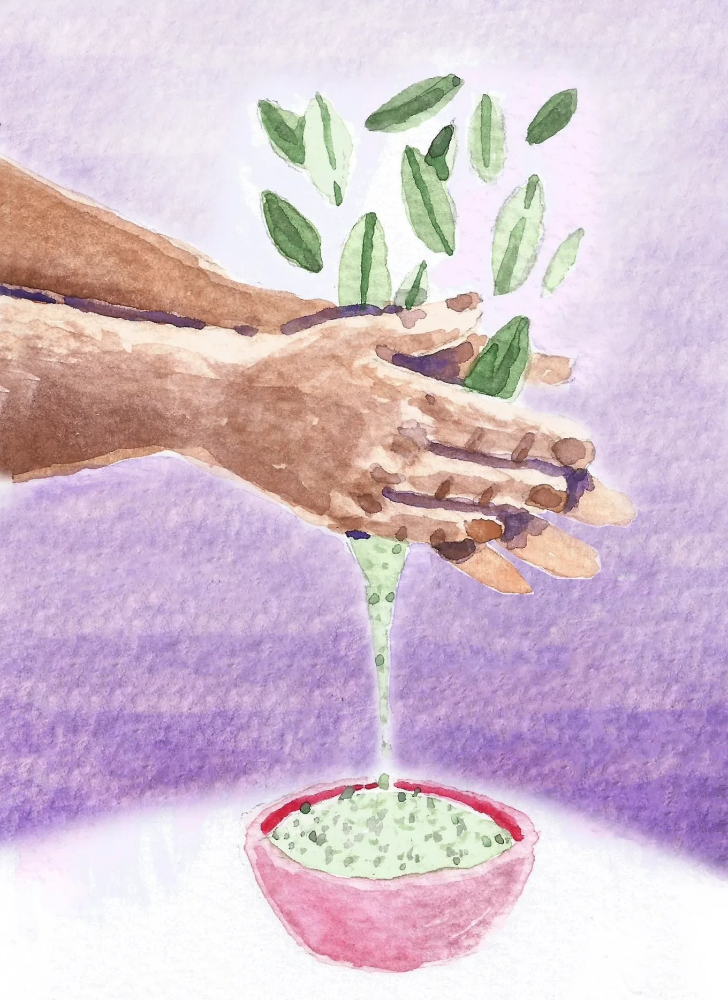
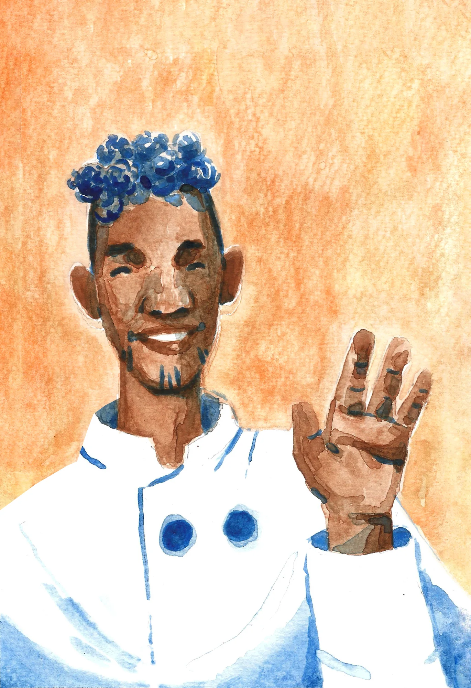
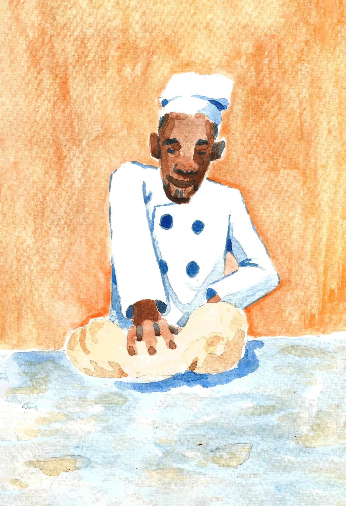
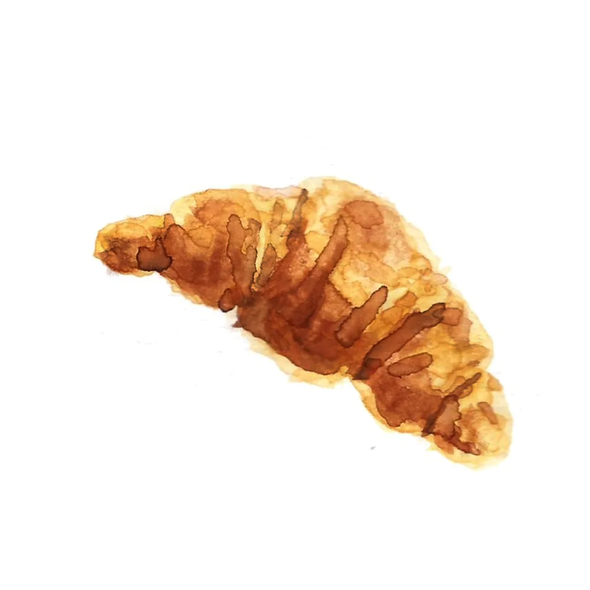
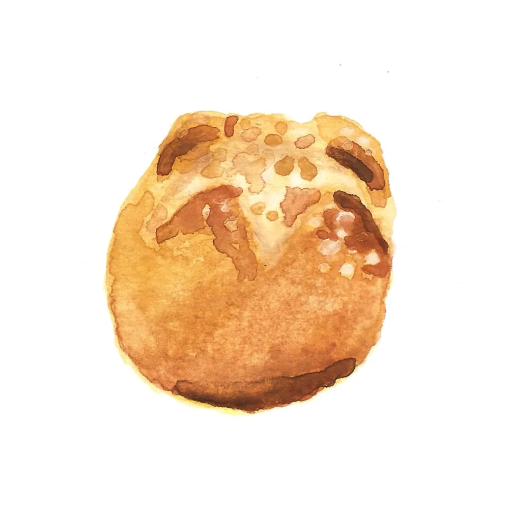
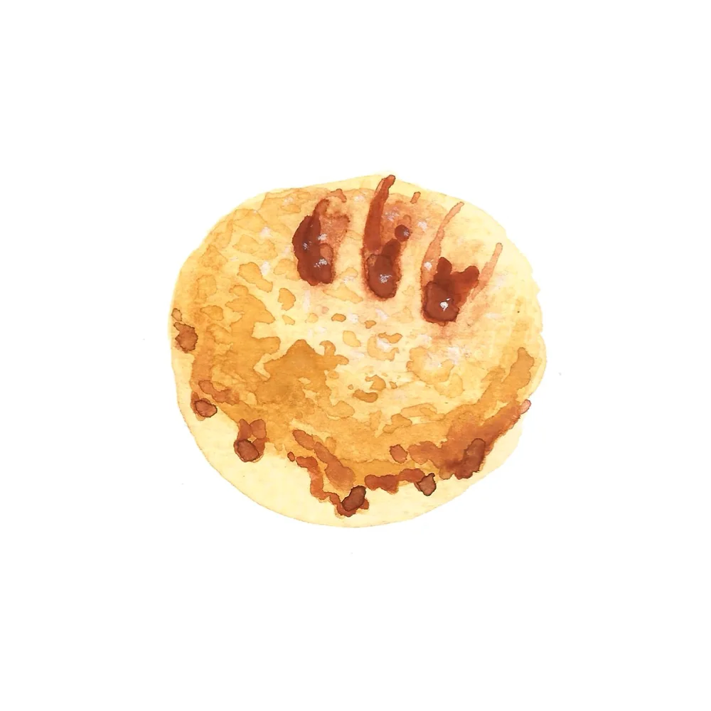
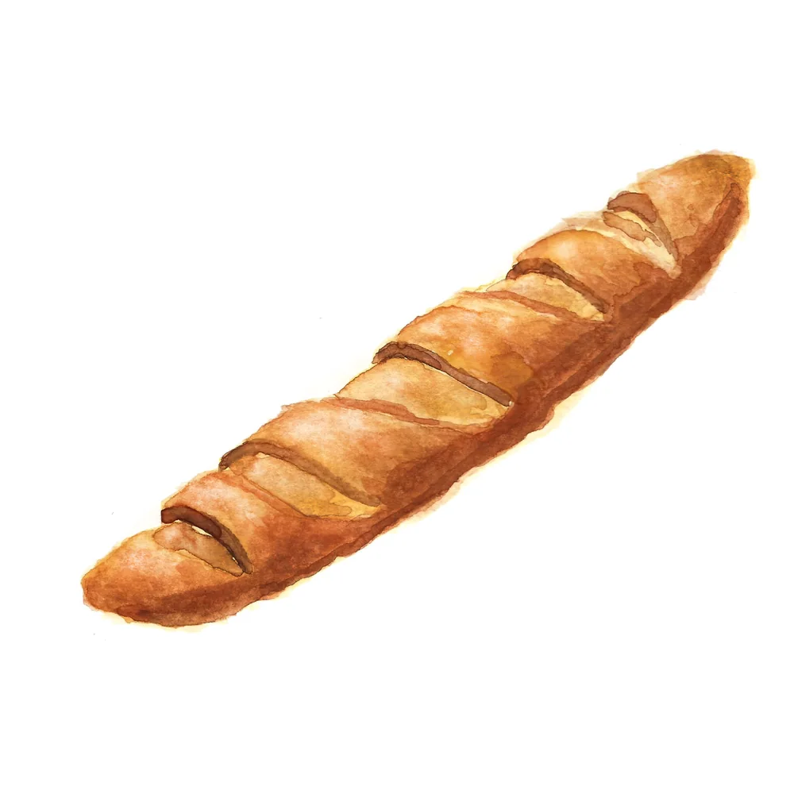
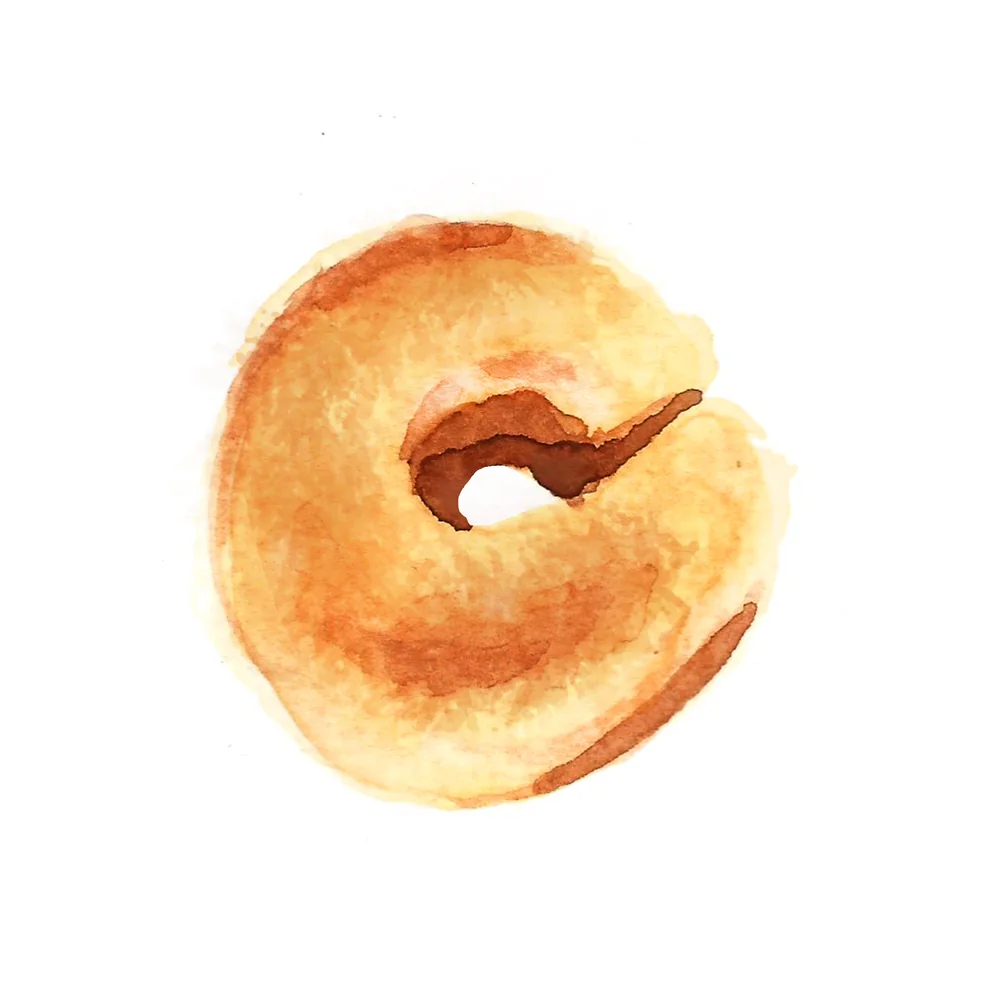
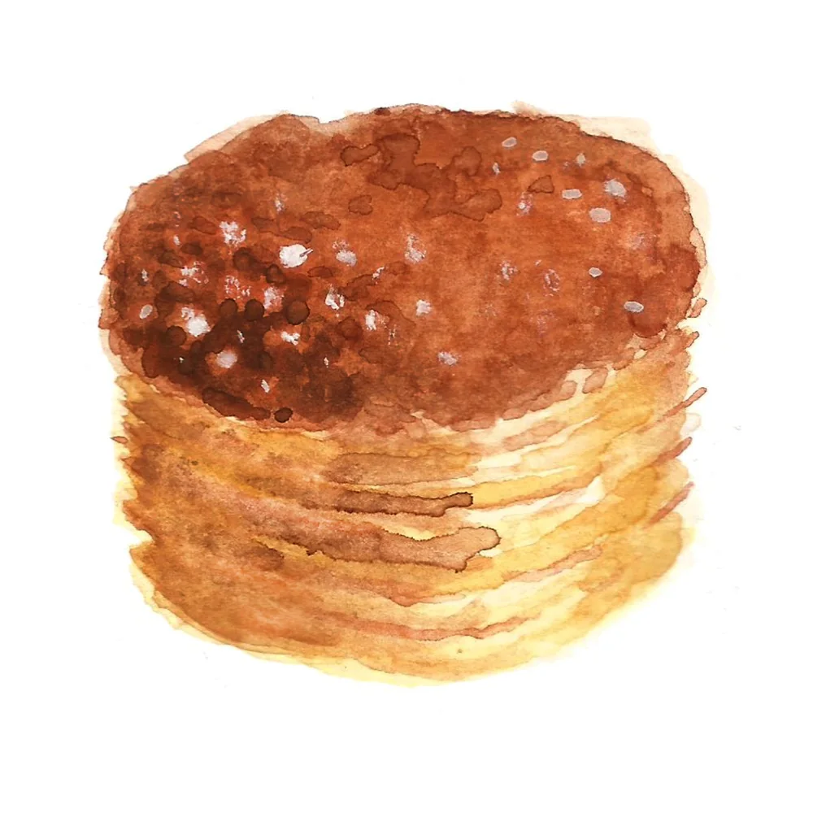
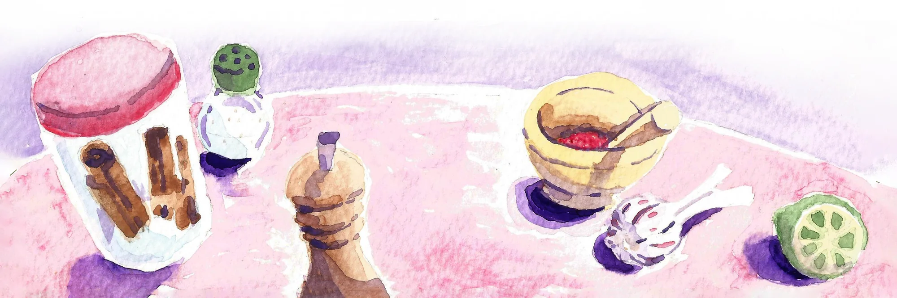

Cocina y panaderíaCooking and baking
Recetarios ilustrados en acuarelaWatercolor recipe books
Ilustraciones en acuarela para dos recetarios, uno de cocina del Pacífico y otro de panadería. Los recetarios buscan guiar e inspirar a las personas en el arte culinario, fortalecer la conexión con los saberes ancestrales y culturales, y promover el uso consciente de los recursos naturales.
Watercolor illustrations for two recipe books, one on Pacific cooking and one on baking. The books aim to guide and inspire people in the culinary arts, strengthen ties with ancestral and cultural knowledge, and encourage the mindful use of natural resources.


Portada de la cartilla de cocina e ilustración interior.Cover of the cooking booklet and an inside illustration.



El panadero de la cartilla.The baker from the booklet.






Pan cacho, pan coco, pan dulce, pan francés, pandebono y pastel gloria.Pan cacho, coconut bread, sweet bread, French bread, pandebono and pastel gloria.
